¶Příběhy Ardy
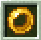
❝Je to nebezpečný podnik, Frodo, vykročit ze dveří. Vkročíš na cestu a když nestojíš pevně, nevíš, kam tě může strhnout.
Jsme jediný Česko-Slovenský Minecraft server se zaměřením na svět Pána Prstenů. Již 5 let vytváříme módované tématické servery s bohatým obsahem a širokou nabídkou zábavy jak pro obdivovatele samostatného modpacku tak i pro ty největší fanoušky Středozemě.
| Technika | |||
|---|---|---|---|
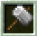 Instalace | 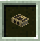 Příručka pro hráče | 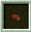 Tipy pro začátečníky | 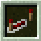 Časté problémy |
| Řemeslo | |||
|---|---|---|---|
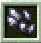 Orečka a Těžení | 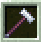 Kování | 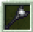 Legendární Zbraně | 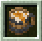 Alcocraft |
| Tavírna | Práce | Hráčské obchody | |
| Boj | ||||
|---|---|---|---|---|
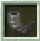 Války | 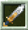 Základy Boje | 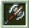 Dungeony | 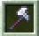 Solo Bossové | Eventy |
¶Nabízíme všechny herní styly jako:
- PVP & PVE & Války frakcí
- Frakční systém
- Survival
- RPG
- Dungeony & Bossové & Questy
- LOTR Lore & Role-Play
- Stavba epických budov
✓Pro připojení ti stačí pouze nainstalovat náš modpack.
Postavíš se po bok Gondoru a budeš bránit svobodné národy proti narůstající temnotě? Nebo se přidáš k Mordoru a pokusíš se zlomit poslední síly, které vzdorují vůli temného pána Saurona?
© Všechna práva vyhrazena tvůrcům módů, naším výtvorem je pouze zprostředkování serveru. Nejedná se o oficiální produkt Minecraftu. Nejsme spojeni s Mojang Studios.